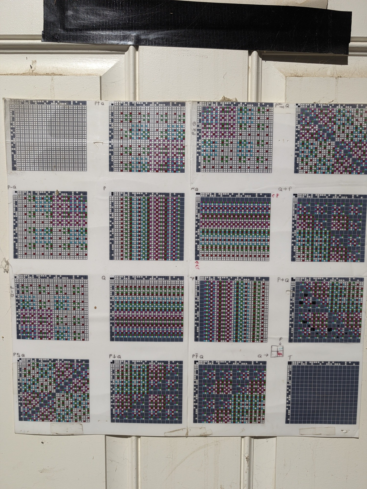

Logic Research · 2019, revisited 2026
One question asked symbolically and geometrically: what can you build from the sixteen boolean functions of two variables, and what do their solutions look like as shapes?
All sixteen functions as rotatable point clouds. Compare freshly generated data against the 2019 archive.
The same regions sampled from a cube, a ball, and projected to pure directions — showing which parts of the shape are real.
Every function applied to every pair of functions: 16 squares of 16×16 cells, computed by lambda reduction, after a 1995 poster.
The distinct lambda terms behind those 4,096 cells, each as a Tromp diagram, in eight notations, mapped back to the cells it comes from.
Gates of Gates as one document: the 1995 poster, the recomputation, the patterns, both interactive pages, lambda16.txt and the data, in a single file that also works offline. Read the document → (13 MB)

The sixteen functions as lambda terms, with every β-reduction on all four inputs: lambda16.txt.
There are exactly sixteen boolean functions of two variables — AND, OR, XOR, the two constants, and eleven others. Everything here starts there and goes in two directions at once.
Enumerate every composition, keep the tautologies, reduce to what is irreducible.
Encode a two-variable truth table as the four bits of a nibble and each function becomes a bitwise expression on two 4-bit operands. Start from all sixteen values and expand: for every value so far, apply all sixteen functions against every other. Each expansion multiplies the population by 256.
16 seeds → 4,096 → 1,048,576 → 268,435,456 (2²⁸)A composition is a tautology when its value is 15 — every truth-table bit set, true under any assignment. Keeping only the eight functions that genuinely combine both inputs, and four of the sixteen values as operands, leaves 131,072 of those 2²⁸ positions; filtering their tautologies is a chain, each stage a verified strict subset of the last:
| Stage | Entries |
|---|---|
| All tautologies among those 131,072 | 17,744 |
| Restricted to and / implies | 1,176 |
| Restricted to P, Q | 70 |
| Deduplicated | 38 |
| P↔Q reflections collapsed | 32 |
268 million machine-generated expressions, reduced to a page a person can read:
P and Q and Q -> P reduces to P and Q -> P
P and Q and !P -> Q becomes FALSE -> QFor each function, the set of weights that computes it — as a shape.
Take a 2–3–1 network. The hidden→output weights are three numbers, so every working set of them is a point in 3D. Sample weights at random, run one forward pass, keep those whose output matches a truth table. Accumulate and you have that function's solution region.
Each solution set is a cone. If a weight vector works, so does every larger multiple of it — scaling up drives the sigmoid harder, which can only sharpen an already-accepted pattern. Verified on 400 accepted weight sets across five scale factors: 2,000 checks, zero failures.
The set is therefore unbounded. It has an inner surface, where weights become too small to push outputs away from 0.5, but no outer one. Every flat face and straight edge in the clouds is the sampling box slicing an infinite cone — the outside is drawn by where you stopped looking, not by the logic.
Sampling from a cube puts about 19% of accepted points within 5% of a face (counting the fourteen non-constant functions). Swap in a ball and about 17% sit within 5% of its surface instead: the cloud refills whatever container it is given. Only the directions are intrinsic, which is what the second viewer shows.
Because the set is a cone, its cross-section on the unit sphere describes it completely. How much of the sphere each function covers:
| Function | Sphere covered | |
|---|---|---|
FALSE / TRUE | 47.2% | |
IMPLICATION and kin | 35.0% | |
P, Q, NOT P, NOT Q | 34.8% | |
OR / NOR | 34.1% | |
AND / NAND | 28.4% | |
XOR / XNOR | 4.8% |
XOR is not hard because of a subtle obstruction. Only 4.8% of directions in weight space work for it, against 47% for the constants. Random search fails on it the way a dart rarely hits a small target — and at ±10 it is not merely rare but absent: zero hits in four million samples, because it needs large weights and none were sampled.
Refactoring, and what refactoring turned up.
The originals were Python 2 and will not run on current macOS. Rewriting them surfaced things reading the filenames never would.
Derived by running the forward pass, not by trusting names:
| Output | 2019 filename | Actually is |
|---|---|---|
| (1,0,0,0) | R9NAND__* | NOR |
| (1,0,1,1) | R9IMPLICATION__* | Q → P, the converse |
| (1,1,0,1) | R9REVIMPLICATION__* | P → Q, implication |
Implication and its converse are swapped, and files named for NAND hold NOR solutions. Real NAND was never searched for in those scripts at all. The errors are not uniform — names in the 262k folder are correct, from a later fix.
train_random_weight_search_v4.py — TypeError on line 16: int(arg2/2) where arg2 is a string from sys.argv.four_to_sixteen_architecture/working.py — IndentationError, plus Python-2 xrange.Files named asyn0, bl2, run_c_* carried an unexplained letter. There are two families. In asyn0 and its neighbours the letter is an output prefix passed as argv[4], a label typed on the command line; the seed was a separate argument and was never recorded. The run_* files carry the same letters but are sigmoid runs, which no surviving script writes as it stands. Separately, six RandomWeightSearch variants hardcode a letter against a seed (z is 0, a to f are 1 to 6), and there the letter does encode the seed.
The 2019 loops ran one weight set per Python iteration inside range(30000000000), meant to be killed by hand. Vectorised in numpy the same sampling does 200 million samples in 46 seconds and collects all sixteen functions in one pass. That is what made XOR and AND obtainable; the archive contains no AND cloud at all.
An earlier reading called the archived FALSE cloud “essentially a perfect sphere surface” because its radius spans only 4.28–4.32 across 1,054 points. That was wrong. Every coordinate lies between −2.50 and −2.41: it is a tight cluster, and a small blob has near-constant radius exactly as a sphere does. Radius alone cannot tell them apart; spread about the centroid can, and it is 0.03.
The useful parts are empirical and pedagogical, not novel. Measured hit rates and visible geometry are a sharper answer to “why is XOR hard” than the usual hand-wave.
But complementary functions have mirror-image solution regions because sigmoid(−x) = 1 − sigmoid(x) — one line of algebra, not a discovery. And that XOR needs a hidden layer has been known since Minsky and Papert in 1969.
python3 python/test_boolean16.py # 17 checks
python3 ANN/test_nncore.py # 30 checks
# how hard is each function to hit?
python3 ANN/generate_clouds.py --samples 4000000 --range 20 --rates
# the clouds the viewers use
python3 ANN/generate_clouds.py --samples 200000000 --range 20 --n 0.9 \
--seed 1 --cap 12000 --out ANN/generated_clouds
python3 ANN/generate_clouds.py --samples 120000000 --range 20 --n 0.9 \
--seed 2 --shape ball --cap 11000 --out ANN/clouds_ball
python3 ANN/generate_clouds.py --samples 120000000 --range 20 --n 0.9 \
--seed 3 --shape ball --normalise --cap 11000 --out ANN/clouds_dir
# rebuild the two viewers from those clouds
python3 ANN/build_viewers.py{kind=link}